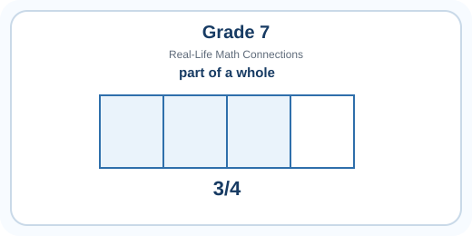
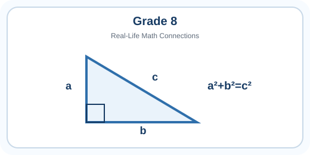
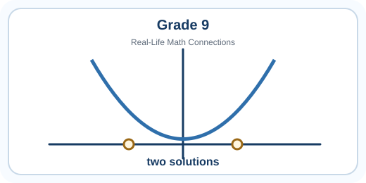

Curriculum Card Guide
Grade 7
Positive and negative numbers, fractions, ratios, algebra, geometry, measurement, functions, statistics, and probability.
Open Grade 7 →
Curriculum Card Guide
Grade 8
Real numbers, roots, proportionality, polynomials, inequalities, similarity, surface area, slope, data shape, and compound probability.
Open Grade 8 →
Curriculum Card Guide
Grade 9
Number sets, exponent laws, polynomial operations, quadratics, inequalities, triangle relationships, composite solids, functions, spread, and combined events.
Open Grade 9 →About these guides: Curriculum statements come from the June 2026 Alberta draft Mathematics (7–9) curriculum for optional classroom piloting in 2026–27. The examples and explanations are written for students and parents.